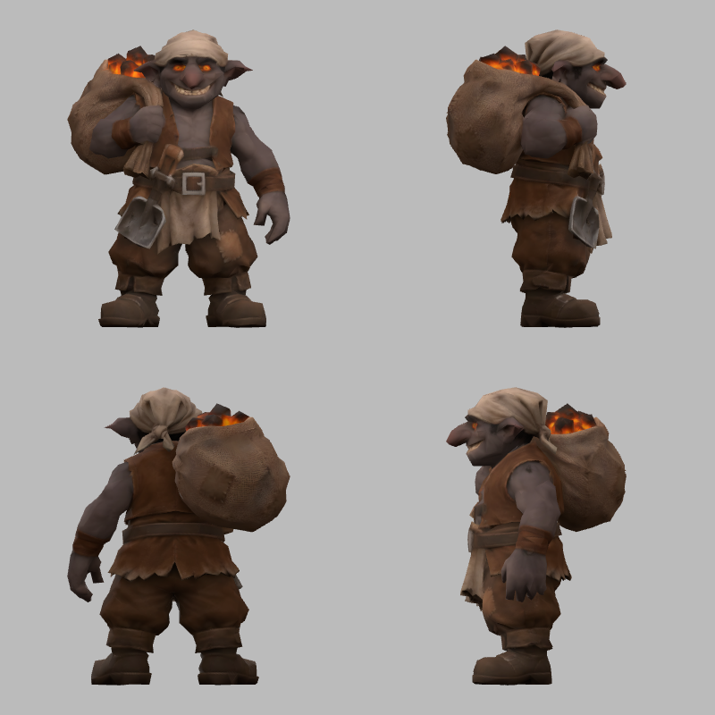

The Kiln's mortar: your export, with a skeleton and nine moves added by hand. A squat soot-grey imp with a sack of live coals over its shoulder. It sidles, keeping 3.6 to 5.2 u from you; then it plants, heaves the sack back while an Ember ring marks your spot, and hurls: a coal leaves the sack mouth on a high arc, lands in the ring for 9 and leaves a bed of cinders that slows. Stunned mid-heave, it fumbles the sack instead. The ring, the coal's flight and the bed use the game's numbers frame for frame. Pick a move, drag to turn it, and judge it. Nothing in the game has changed.
Idle or Sidle sets what it does between throws, and Going turns it on the spot. Coal plays the game's whole attack against the hero stand-in 4.4 u ahead (the heave while the ring fills, the hurl, the coal's flight, the landing and the bed) and repeats until you press it again. Fumble plays the stun mid-heave. Hurt plays on top of anything. Death drops it: press it again and it spawns back. The bar names the part of the move that is playing, in the game's own words.

It came through whole, as one piece: a big-nosed grey imp in a head rag, a leather vest and patched breeches, a coal sack over its right shoulder with glowing coals in the mouth, its right fist gripping the sack's fold at its chest, and a small shovel at its right hip. The right fist and forearm are fused to the chest and the sack's drape, so that arm cannot move without tearing; see the open choices.
| Move | What it does | Timing |
|---|---|---|
| Idle | Stands squat with the sack on its shoulder, breathing, hitching the sack, the free left arm loose. The coals breathe a dim Kiln Gold. | Mine: a 4 s loop. |
| Sidle | A short bow-legged trot, the sack bouncing, the left arm swinging. | Game: 1.6 u/s. The stride is mine: a step every 0.3 s. |
| Turn left, turn right | Shuffles round on the spot. | 180° a second (mine: the game turns it at once). |
| Coal | The game's attack, whole. It braces, the left foot forward, and heaves the sack back over its shoulder, leaning back with the left arm raised, while the Ember ring fills on you; the coals brighten. At 0.68 s it hurls: the body snaps forward, the sack swings up and over from the fist, the left arm throws forward, and a coal leaves the sack mouth on a high arc, smoking. It lands in the ring at 1.1 s for 9: an Ember shock ring, a flash, sparks, coal chunks, smoke, and a scorch with a bed of cinders that lasts 2.5 s. The sack hangs slack as it steps back into its stance. | Game: the ring 66 ticks, the coal in the air its last 0.42 s, peaking 1.5 u up; the bed 150 ticks. The heave and the hurl's poses are mine. |
| Fumble | Starts the heave, is stunned at 0.4 s: it jolts, the sack slips off the shoulder and coals spill in a puff of sack smoke; it hauls the sack back up. | Game: a stun mid-heave cancels the coal. The poses and the 1.6 s are mine. |
| Hurt | The upper body jolts back with the sack. Plays on top of any move. | 0.4 s |
| Spawn | Grows in, hitches the sack up, and settles into its stance. | Game: grow in 7 frames, about 10% over. The rest is mine. |
| Death | Struck, it jolts back and the sack slips; the knees give, it topples forward onto the sack, and the coals spill out of the mouth and smoulder as the glow dies. | Mine: 2 s, then it stays down. The game pops every foe where it is; the split sack and spilled coals are the game's death effect. |
| What was measured, on every frame of every move | Result |
|---|---|
| Planted feet that slide (idle, sidle, both turns, the brace, the fumble) | 0 mm |
| Loops that jump when they restart (idle, sidle, both turns) | 0 |
| Feet sinking into the floor | 5 mm at worst |
| Lying dead | On the floor, not in it: its lowest point measured on every frame of the fall (3 mm at worst). |
These numbers come from the model file. I checked the poses as still frames only: the cloud machine cannot play the page at full speed, so the heave, the hurl and the coal's arc are yours to judge.